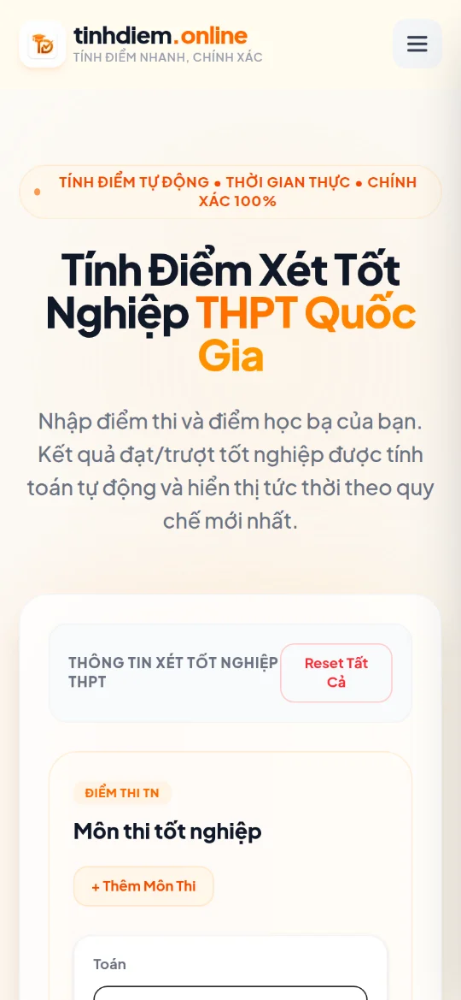

LIVE WEBSITE · 2026
Tính Điểm Online
A free grade and GPA calculator I built for my own studies, now used by 2,500+ visitors a month, from primary school to master’s degree.
- Next.js 16
- React Server Components
- TypeScript
- Tailwind CSS v4
- Ant Design
- MDX
- Vercel
At a glance
It started as my own problem. Every time I wanted to know where my grades stood before an exam, I ended up with a spreadsheet and a page of rules: which weights, which scale, how the 10-point score turns into a letter and a 4-point GPA.
So I built the tool I wanted: open it on a phone, type in your scores, and see the result right away. It turned out thousands of other students had the same problem. Today Tính Điểm Online gets more than 2,500 visits a month.
From a personal tool to a site people find
A calculator only helps if students can find it. Most of the work after the first version went into making each page answer a real search:
- A page for each questionSeparate calculators for each level and each kind of score, such as the subject average, the semester average, or the high school graduation score, each with its own title, description, and keywords.
- Landing pages for universitiesDedicated pages for 18 universities, plus a live search across 280+ schools.
- Content that answers the next question25 guides on raising GPA, the 2025–2026 exam rules, score conversion, and scholarships, written in MDX.
- Technical SEOStatic pages for speed, structured data, a sitemap, robots rules, and Google Search Console, with Google Analytics to see what students actually use.
What it does
Every school level
Primary, lower secondary, and high school calculators, including the high school graduation score.
University & master’s GPA
Subject, semester, and cumulative GPA on the 10-point and 4-point scales, with letter grades from A+ to F.
Find your school fast
Live search across 280+ universities and academies, with filters by region (North, Central, South) and type (public, private).
Works on phones
A responsive layout, so students can check their scores on a phone as easily as on a laptop.
How it works
- Next.js 16App Router with React Server Components and static generation for fast pages.
- UITailwind CSS v4 with Ant Design components and a custom responsive grid.
- ContentBlog posts written in MDX and rendered at build time.
- SEO & analyticsPer-page metadata, structured data, sitemap, robots rules, Google Search Console, and Google Analytics.
Screenshots

Try it
Open tinhdiem.online on your phone.